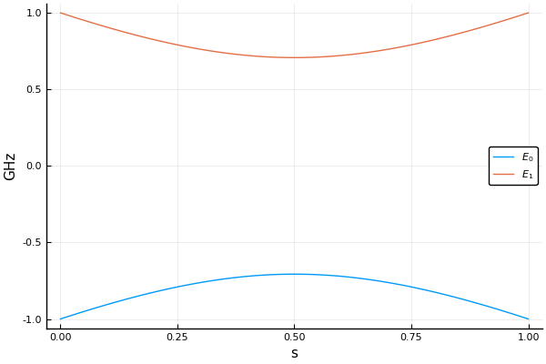

Hamiltonians
A Hamiltonian is basically a time-dependent matrix. The package currently offers two ways to construct a Hamiltonian object. Before introducing those constructors, let's discuss the unit of Hamiltonian first.
Unit
From the Schrodinger equation
we know the Hamiltonian can be normalized by $H / \hbar$. If we set $h=1$, then what appears on the RHS of Schrodinger equation is $2\pi H$ where $H$ has the unit of frequency. We set this unit to the natural unit of superconducting qubits – GHz.
Construction
Affine Operator
For fs = [f1,f2,...,fn] and Ms = [M1,M2,...,Mn] where each of the fi and Mi are Function(or callable object) and Matrix, the following constructor:
function TypeHamiltonian(fs,Ms)builds an time dependent Hamiltonian $H = f_1(t)M_1 + f_2(t)M_2 + … + f_n(t)M_n$. The Type should be changed to a specific descriptor of the Hamiltonian. For example, a Hamiltonian consisted of dense matrices can be constructed with DenseHamiltonian
julia> H = DenseHamiltonian([(s)->1-s, (s)->s], [σx, σz])The DenseHamiltonian constructor creates a standard single qubit annealing Hamiltonian of the form $H(s)=(1-s)σ_x+sσ_z$, whose default unit is GHz ($h=1$). Internally, this package always store the value of $H/\hbar$. So any object created with default unit will be scaled by $2π$. You can set the unit to $ħ=1$ by using the keyword argument unit
julia> H_ħ = DenseHamiltonian([(s)->1-s, (s)->s], [σx, σz]; unit=:ħ)(Setting unit to :ħ means the inputs of the constructor is already $H/\hbar$.) To obtain the value of Hamiltonian at given s in consistent units, it is recommended to use function evaluate
julia> evaluate(H, 0.5)
2×2 Array{Complex{Float64},2}:
0.5+0.0im -0.5+0.0im
-0.5+0.0im -0.5+0.0imIt always returns the Hamiltonian value in GHz. Calling H directly like a Function will return numerical value of $H/\hbar$
julia> H(0.5) == 2π*(σx + σz)/2
trueThere are two additional constructors: SparseHamiltonian and AdiabaticFrameHamiltonian, which construct sparse Hamiltonians and Hamiltonians in adiabatic frame respectively.
Interpolating
The second method is to construct the Hamiltonian by interpolating gridded values
Internally, the package rely on Interpolations.jl for fast interpolating. The syntax for constructing interpolation Hamiltonian object is
H_interp = InterpDenseHamiltonian(s_axis, H_list)
H_interp = InterpSparseHamiltonian(s_axis, H_list)where s_axis and H_list are the grid points and corresponding Hamiltonian values. The constructors also take keyword argument method, order and unit. method and order specify the internal interpolation method. For dense Hamiltonians, both BSpline of order 0-3 and Gridded of order 0-1 are supported. For sparse Hamiltonians, only Gridded of order 0-1 is supported.
Eigendecomposition
Plotting
This package can also interact with Plots.jl to provide convenient ways for visualizing the spectrum of any given Hamiltonians. For example
using Plots
plot(H, 0:0.01:1, 2)will produce the following figure. The second argument 0:0.01:1 is the x_axis values and the third argument 2 is the number of levels to plot. The third argument can also be a list of levels.
